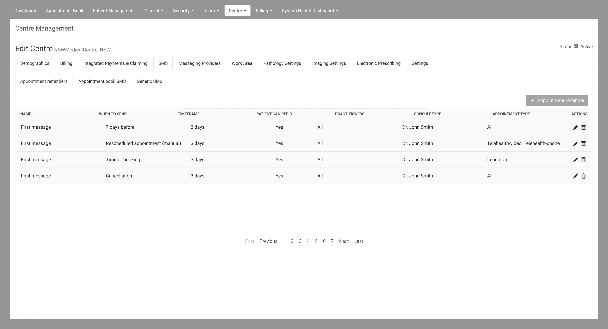
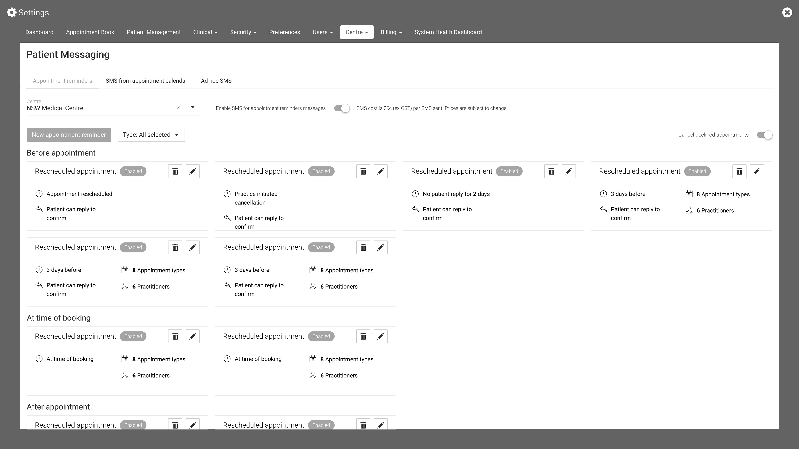
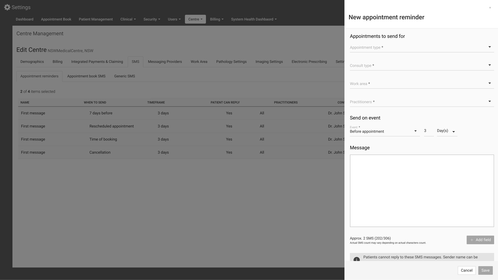
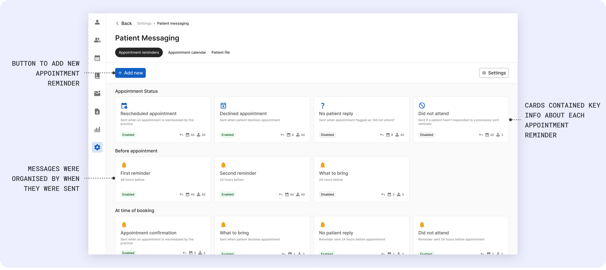

How a redesign led to 90% + of practices increasing their usage of the messaging system

dashboard for setting up automated messages
Client with 150 + practices was at risk of churning due to our outdated patient communications system
The practices worked with high risk patients with high communication needs and our patient communications wasn't up to scratch for them.
These practices and the rest of our users were finding other solutions and workarounds instead of using the built-in feature.
Why is patient communications important for practices?

Delivering effective care

Burden of care

Running a profitable practice
Practices rely on it to schedule, confirm and update appointments with patients as well to receive information and results.
Practices also have a burden of care and don't want to be exposed to the risk of litigation.
Patient communication also helps reduce no-shows, essential for practice revenue and profitability.
Exploratory research sessions
 Specialists
Specialists
 GPs
GPs
 Youth Mental health
Youth Mental health
To get practices to use the feature, I first had to understand why they weren't using it.
I talked to doctors, practice managers and reception staff across both GP and specialist practices to understand what, when and how practices wanted to message patients.
Insights from this research were mapped in a workshop with business stakeholders to understand this process.

affinity map from stakeholder workshop
Research findings demonstrated the complexity of managing patient communications and the burden it puts on staff
The wide range of situations, patients and timings for patient communications from a practice make its management complex.
Vulnerable patient groups such as those with chronic conditions or youth mental health patients require ongoing and detailed communications.
Practice staff are overburdened keeping track of if and when patients have been contacted, leaving room for human error.

mapping patient communications
Building a feature that reduces admin work but is flexible enough to accommodate all communication needs for practices
This project required balancing speed and quality
The competing priorities of delivering quickly for the corporate client and delivering a longer term fix resulted in overlapping research and design stages.
Essential to this was negotiation with PM and tech on what could be delivered given the constraints.
This case study focuses on the longer-term, higher value component rather than the short term solution that was delivered.
Design explorations

table layout

card layout

adding in an appointment reminder
Dashboard for automated messaging
From user research I knew how much of what practices wanted to send was tied to appointments.
This was leveraged to allow practices to send messages automatically based on the conditions they set.
This dashboard design gives practices an overview of what's been set.

main page for setting automated patient communications
Creating a new message
This area has to provide enough flexibility for the range of situations practices wanted to send messages for.
Practices could set when the message is sent, for what appointment types and for which practitioners.
Initial design included more fields but this was simplified after users found their relationship confusing during testing.
I also added the enabled checkbox after user feedback indicating they'd like the ability to turn on/off the message without recreating it.

modal for creating automated messages
Special case appointment reminders
I received feedback from user testing that there were special scenarios practices wanted to send messages that weren't initially included.
For 'No Patient Reply' practices wanted the ability to trigger a follow up message to a patient if they hadn't replied to the initial message.

modal for 'no patient reply'
The design achieved key outcomes
During beta over 90% of practices reported using the messaging system more than before.
Practices also reported a significant reduction in time spent contacting patients using the automated system.
And importantly, the corporate client renewed their contract following successful delivery of the feature.
Learnings - adapting to a high priority and short notice project

Importance of codesign

Pushing to address design debt

Staggering design into stages
Working closely with our users and getting input through discovery and testing phases delivering the most value possible given the short time frame.
Pushing to address design debt by adding updating the card component in our design system resulted in a far better outcome demonstrating it was worth pushing for.
As this project was staggered into phases to achieve quick wins and deliver longer term value I learned how adaptable and malleable the design process can be.